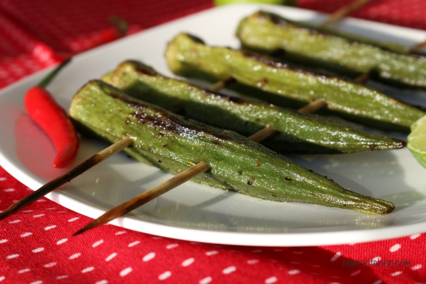

Grilled Okra

Descriiption
I made this asparagus salad one summer evening when I was planning to grill anyway. I had spinach and Parmesan cheese in the fridge, combined them with the grilled asparagus, and was delighted with the outcome. My husband and I love it!
Ingredients
- ¼ cup olive oil
- 2 tablespoons lemon juice
- 12 fresh asparagus spears
- 6 cups fresh spinach leaves
- 2 tablespoons grated Parmesan cheese
- 1 tablespoon seasoned slivered almonds
Steps
- Preheat an outdoor grill for low heat and lightly oil the grate.
- Combine oil and lemon juice in a baking dish. Add asparagus and roll until coated.
- Grill asparagus on the preheated grill, turning at least once and brushing with remaining oil-lemon juice mixture, until crisp-tender, about 5 minutes. Remove from the grill and place back into the baking dish. Cut into bite-sized pieces.
- Combine spinach, Parmesan, and almonds in a large bowl. Add asparagus along with any oil-lemon juice mixture from the dish. Toss to blend and serve immediately.